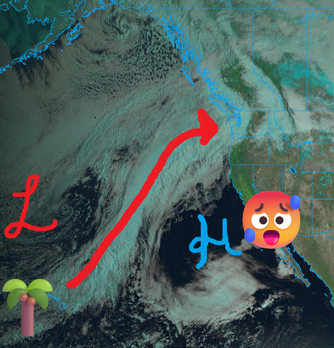
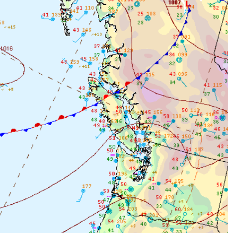
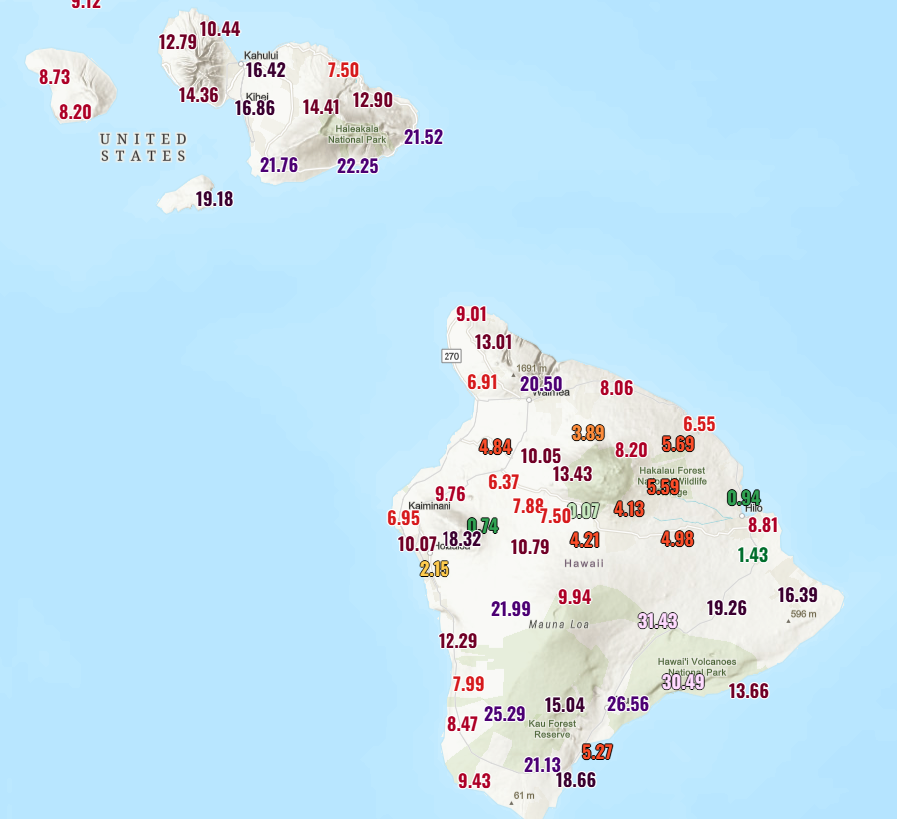
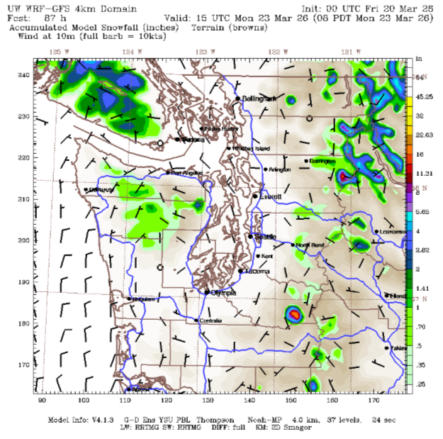
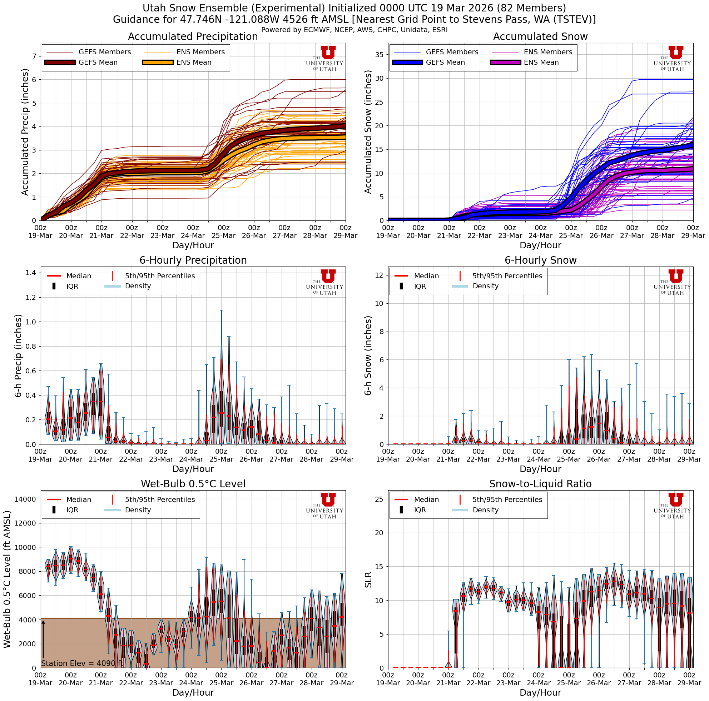

☕Its back to the old grind after we got too much of a good thing...
Welcome to The Dendritic Growth Zone!
Past Week's Recap
I've been calling last weekend a "genie wish" storm -- we got what we wanted, but not necessarily
what we asked for. This was by far and away the largest winter storm cycle we've seen in the Cascades
this winter, and the result was lost power, pass closure, and powder so deep it was nearly impossible
to get anywhere. Even the lowlands got in on the action with 3 inches recorded at Sea-Tac on Friday, although this was a narrow
band, with little to no snow measured south of Tacoma and north of Everett.
  
As an aside, this past week brought intense rain to the Hawaiian Islands and record heat to the southwest.
In Hawaii, over a meter (!!) of rain fell at some high elevation locations in the past week as a deep and
powerful "Kona Low" impacted the region with deep troughing over the central Pacific.
Further east (U.S. Southwest), a "mega-death ridge" built in place with record-breaking heat with many locations
experiencing record-setting March temperatures.
🧙♂️ Forecast Discussion
Short-term (Friday-Sunday)
A pretty boring forecast as we return to the normal AR roller coaster.
As the current AR weakens and the cold front moves through Friday, a weak transient ridge builds overhead. As the weekend begins, freezing levels will
drop sharply towards more manageable levels (read below 5000 ft). However, the moisture tap will be turned off,
although there may be some lingering convergence zone or convective activity that may drop some preciptiation in the central
to northern Sound region. In the east part of the Northern Cascades, snow may be able to build up a bit through Friday into Saturday as
the cold air and residual moisture look to interact a little bit.


Medium-Term (Monday-Wednesday)
The medium term looks much the same with an AR passing through on Tuesday with moderately high freezing levels to drop more rain on the mountains.Nevertheless, after this passes, there is an intruiging system arriving Wednesday developing with some decent model agreement on a solid dose of snow.

🧙🔮🧙♂️ Reading the crystal ball - 7+ day outlook
There is a decent amount of uncertainty in the next week as we sit at the interface between the big, nasty ridge to our south and cooler Gulf of Alaska troughing to our north. This leaves us at the mercy of a bit of atmospheric randomness that makes longer term forecasts for our area a bit challenging. However, there is decent agreement we likely won't be suffering under a mega-ridge. So we'll take that as a win.

❄️ Snowfall
Weekend Snow Accumulation Forecast
| Site | Through 4am Saturday | Through 4am Sunday | Weekend Snow Accumulation (4pm Thursday through 4am Monday 16 Mar) |
|---|---|---|---|
| Mt. Baker (4500') | 0-2" | 0-2" | 0-2" |
| Washington Pass | 3-6" | 3-6" | 3-6" |
| Stevens Pass (4500') | 0" | 0" | 0" |
| Hurricane Ridge | 0-1" | 0-1" | 0-1" |
| Blewett Pass | 0" | 0" | 0" |
| Snoqualmie Pass | 0" | 0" | 0" |
| Crystal (5000') | 0" | 0" | 0" |
| Paradise | 0-2" | 0-2" | 0-2" |
| White Pass (5000') | 0" | 0" | 0" |
🧊 Freezing Level
- Friday: 7000-9000 feet (strong north-south gradient)
- Saturday: 2000-4000feet
- Sunday: 2000-4000 feet (rise in evening)
🎿 Our Recommendations
Best Choice This Weekend: Southern British Columbia
After this week of rain nuked any good, accessible snow, it's time to head a bit north. While driving far into thr Canadian coastal range or Rockies will be the best bet, there may be some fun to be had at Whistler on Saturday. I also have a hunch that there could be a bit of snow to play around with in Manning Park, just north of North Cascades National Park. Check it out if you're willing to drive!
Runner-Up: Washington Pass
It's risky given access limitations (unless you have a sled), but Washington Pass might be in the right location to see a decent coating on top of the mush. I can't say the snow will be good to ski, but it might be servicable.
Before we go, a quick detour to ask does rain actually melt our snowpack?
This week's AR dumped an egregious amount of rain on the snowpack we built last weekend — and yes, snow definitely melted. But is the rain directly to blame? Not really. The physics are counterintuitive enough to be worth a quick detour.
Rain heat input vs. condensation latent heat
During a rain on snow event, the snowpack is a cold surface sitting in warm, saturated air. Ignoring net radiation (which is a rather big assumption here, but stick with me), there are two other ways energy reaches it: the heat carried by the rain itself, and the latent heat released when water vapor condenses directly onto the snow surface. The second one wins by a mile.
Using rough estimates for a site at ~1,500 m elevation with 5°C air, 100% humidity, 1 mm/hr of rain, and 3 m/s winds:
Rain heat input (Qr). One millimeter of rain per hour is 1 kg of water at 5°C landing on 0°C snow. Cooling through a 5 K temperature difference doesn't yield much:
Condensation latent heat (QE). Warm saturated air at 5°C has a vapor pressure of ~872 Pa; the 0°C snow surface sits at ~611 Pa. That gradient, stirred by wind, drives vapor to condense directly onto the snow. When it does, every kilogram of condensed vapor releases 2,500,000 J — the latent heat of vaporization. That's ~600× the energy per kilogram compared to simply cooling liquid water by one degree:
QE = 1.05 × 2,500,000 × 0.002 × 3 m/s × 0.0019 = ~30 W/m² → 0.33 mm w.e./hr melt
The bottom line: melt during rain-on-snow events is driven by warm, humid, windy air — not precipitation volume. The rain is just along for the ride.
Estimates use a bulk aerodynamic approach (Ce = 0.002, neutral stability), standard atmosphere at 1,500 m (P = 84,100 Pa), and Magnus formula saturation vapor pressures. Rough numbers — intended as illustration, not a precise forecast.